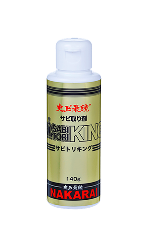

為了防止除鏽後再次生鏽，SABITORI KING用來去除電鍍層的生鏽情形，MEKKING可以維護鍍層的光澤
這兩種產品皆可應用於各種電鍍塗料，如摩托車，水上摩托車，汽車等。


- ※ 若將MEKKING放置於30℃以上之場所（例如：夏天或車庫中的汽車），MEKKING會蒸發並且呈現固態狀。請保持在比較涼爽的地方，如在房間裡。
- ※ 若沒有完全蓋緊黑色蓋子，可能導致蒸發，使用後請密封。

為了防止除鏽後再次生鏽，SABITORI KING用來去除電鍍層的生鏽情形，MEKKING可以維護鍍層的光澤
這兩種產品皆可應用於各種電鍍塗料，如摩托車，水上摩托車，汽車等。